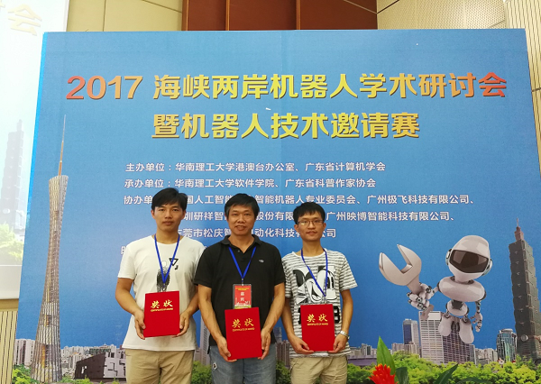

2017年9月13日至9月18日，第十一届海峡两岸机器人学术研讨会暨机器人技术邀请赛在华南理工大学举行。本届研讨会和邀请赛云集了海峡两岸多家高校的专家和研究人员。其中大陆有来自清华大学、浙江大学、上海交通大学、上海大学、华南理工大学等高校的师生40多人；台湾方面有来自成功大学、淡江大学、台湾科技大学、中山大学、高雄第一科技大学、中兴大学、中正大学等7所高校的师生60多人。
上海大学“自强队”自参加2009年海峡两岸机器人学术研讨会暨机器人足球邀请赛后，今年再次应邀出席了在大陆举办的第十一届海峡两岸机器人学术邀请赛。经过两天的激烈角逐，我校学生凭借“3D-Tof智能深度相机”摘得一等奖。该款相机可实现大幅面深度影像的实时拍摄，为3D机器视觉在工业实时在线检测应用提供了先进的解决方案并可广泛应用于生产安全、三位检测测量、机器人定位导航、人机协同制造及辅助驾驶等领域。
本次交流活动得到了教育部港澳台事务办公室的大力支持，通过开放的学术会议和精彩纷呈的机器人比赛充分展现了海峡两岸的教师与学生的机器人技术研究成果，增进了两岸高校间的友谊，从而进一步提高了两岸高校在机器人学科技术方面的合作水平。
上海大学自强队供稿
2017年6月25日